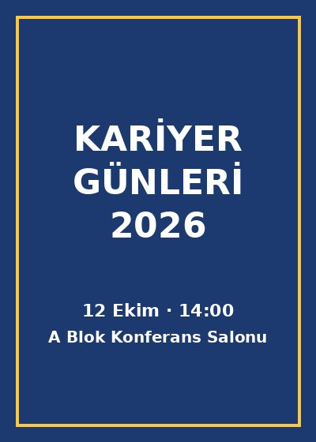

- Tarih
- Yer
- A Blok Konferans Salonu
- Kategori
- Seminer
- Kontenjan
- 120
Açıklama
Kariyer Günleri, farklı sektörlerden şirket temsilcilerini ve mezunları öğrencilerle buluşturan bir söyleşi etkinliğidir. Staj başvuruları, özgeçmiş hazırlama ve mülakat süreçleri üzerine yapılacak sunumların ardından soru-cevap bölümü yer alacaktır. Katılım ücretsizdir; kontenjan dolana kadar kayıt alınır.